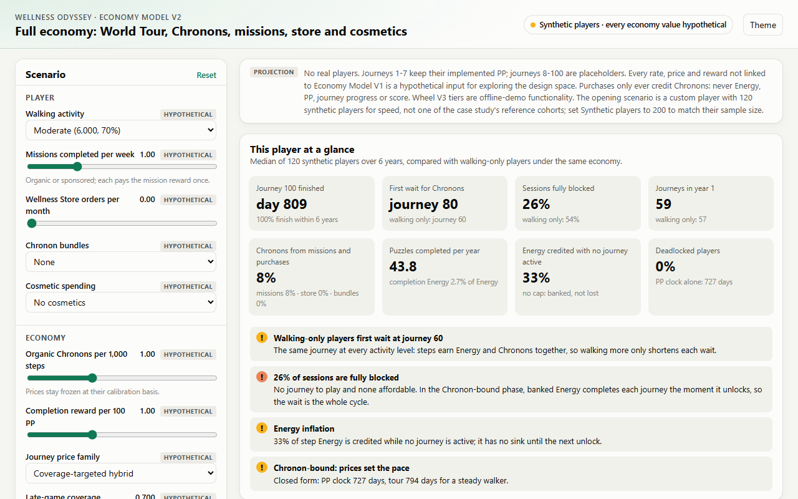
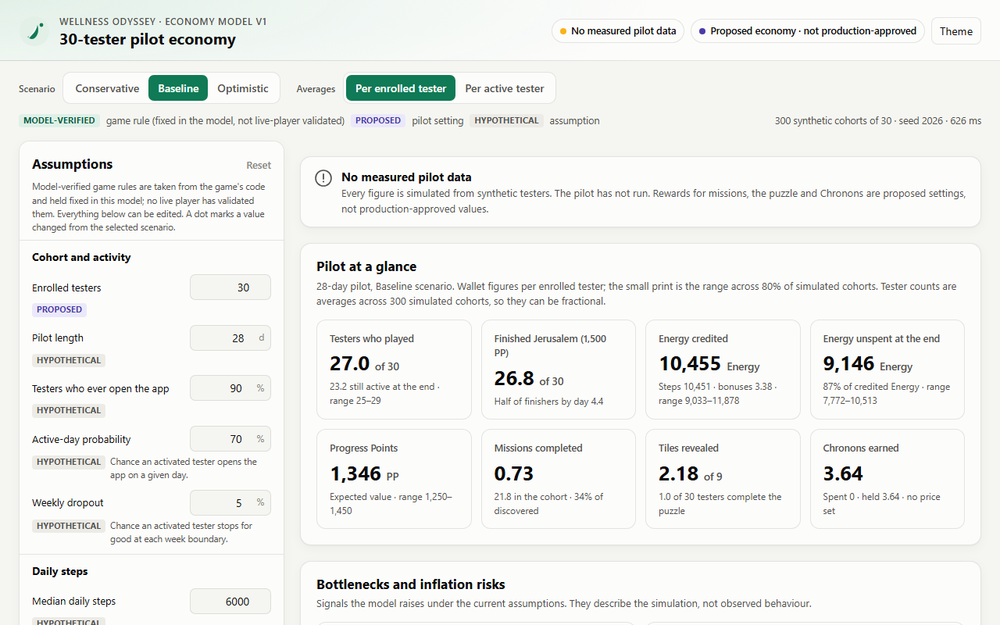

Economy labs
Wellness Odyssey is a mobile walking game: real steps become Energy, Energy buys spins of a reward wheel, and the wheel pays Progress Points that carry the player along journeys. Chronons, a planned second currency, open new journeys and buy cosmetics. These two labs run the game's economy models in your browser.

Economy Model V2: the 100-journey economy
A six-year World Tour with Chronon-priced journeys, missions, puzzles, a store, bundles and cosmetics. Change how a player walks and spends, or how the economy is priced, and watch waits and blocked sessions respond.
Open the lab →
Economy Model V1: the 30-tester pilot
A 28-day pilot with 30 synthetic testers on the implemented core loop. Switch scenarios and edit every assumption, each tagged model-verified, proposed or hypothetical.
Open the lab →The case studies, methodology, tests and claim checkers are in the repository README.